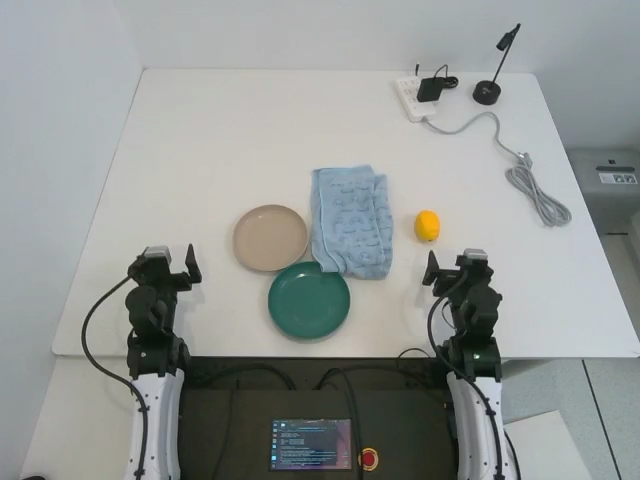
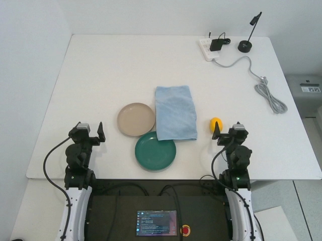
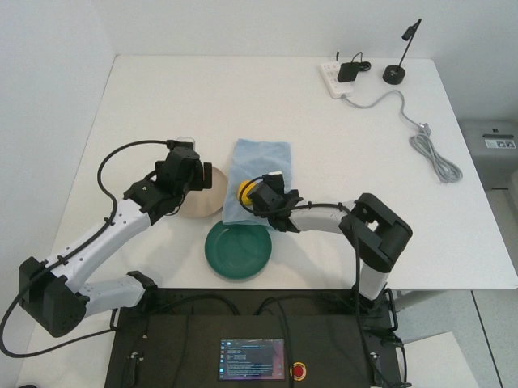
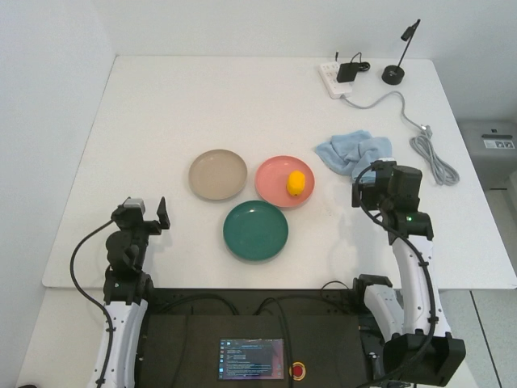

GPTPOLICY
MOVE OR SCROLL TO ENTER
Can a fixed, general-purpose vision-language model learn a new robotic task from a small test-time context - then turn that context into executable, verifiable behavior?




Figure 1. Visual demonstrations can provide procedural structure that language leaves unstated. Here, visual context reveals that the hidden target should be uncovered before placement.
Overview
Humans continually adapt to new situations, whereas a robot trained on a finite set of demonstrations must face tasks and environments that training cannot exhaustively cover. We ask whether a fixed commercial language or vision-language model can extract new task information from a small test-time context and turn it into executable, verifiable behavior from a new initial state.
We introduce GPT-Policy, a general-agent framework that accepts human videos, robot demonstrations, goal images, self-interaction history, and experience of environmental rules or human intent through a shared closed-loop interface. A context compiler preserves task-relevant visual transitions, the VLM proposes robot-tool actions, and a constrained controller checks, executes, and reports each action.
How much robotic in-context learning is already accessible through general VLMs that were not trained as dedicated robot policies?
Context
The study separates the source of information from the task used to test it. Each family supplies something that the current instruction and observation may omit.
Procedure
Ordered visual keyframes specify how a person carries out a task, without expert robot actions.
Fine contact
Aligned visual evidence and optional action references support contact-rich manipulation.
Goal state
A reference image gives the final arrangement and spatial relations without prescribing a sequence.
Memory
Earlier observations, actions, failures, and outcomes remain available for exploration and recovery.
Coordination
Pointing, turn history, and live feedback can change target selection and action timing online.
Method
GPT-Policy places a fixed general VLM directly in a closed loop with robot tools. The model parameters stay unchanged; only the task context and interaction history evolve.

Combine task references, current views, state, and retained interaction history.
Interleave text and images with stable instructions, constraints, and tool schemas.
A fixed general VLM chooses one structured robot-tool request.
Controllers check the motion, execute it, and return fresh observations and feedback.
Experiments
| Context condition | Task | Success | Decisions | Time |
|---|---|---|---|---|
| Without human video | Pick Red Towel | 0 / 3 | 96.3 | 24.6 min |
| Human video | Pick Red Towel | 2 / 3 | 76.7 | 18.9 min |
| Without human video | Remove Glue Cap | 3 / 3 | 49.3 | 12.2 min |
| Human video | Remove Glue Cap | 3 / 3 | 65.7 | 16.9 min |
| Target image | Arrange T Shape | 3 / 3 | 59.3 | 13.3 min |
| Target image | Arrange Fruit | 3 / 3 | 49.0 | 12.4 min |
| Self history | Lemon To Pink Plate | 3 / 3 | 35.0 | 8.1 min |
| Self history | Movable Exploration | 3 / 3 | 40.33 | 25.53 min |
| Human-robot interaction | Tic-Tac-Toe | 3 / 3 | 69.7 | 13.6 min |
| Human-robot interaction | Pointed Fruit Pickup | 3 / 3 | 67.3 | 15.0 min |
Reported values reproduce Table 1 of the current manuscript. Robot visual demonstration rows remain unreported in the submitted draft and are therefore not invented here.
What the current evidence shows
Goal images specify an outcome, demonstrations reveal an operation, and history preserves facts no longer visible.
Correct task reasoning can coexist with failed contact, calibration, tracking, or outcome verification.
The general agent uses new evidence from a fresh initial state while its parameters remain fixed throughout the task.
Discussion
The recorded behaviors illustrate goal grounding, changes in operation order, and online coordination. They also expose a persistent gap between plausible task reasoning and verified physical execution.
The current evidence comes from small run series, incomplete baselines, and controlled ablations. It does not establish safe autonomous deployment. Calibration, execution guards, independent monitoring, and timely human intervention remain necessary.
Citation
@article{anonymous2027incontext,
title = {In-Context Robot Learning with General Agents},
author = {Anonymous Authors},
year = {2027},
journal = {ICLR submission}
}